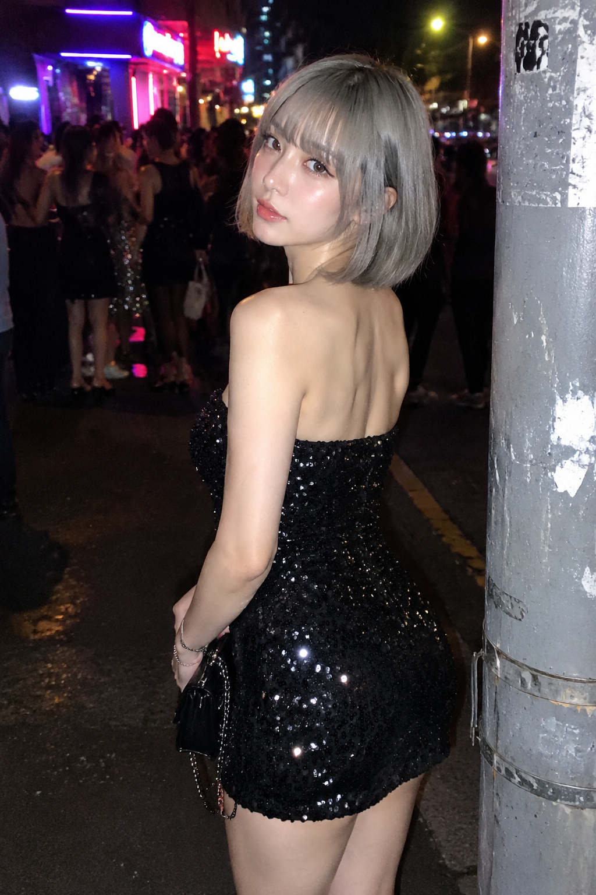
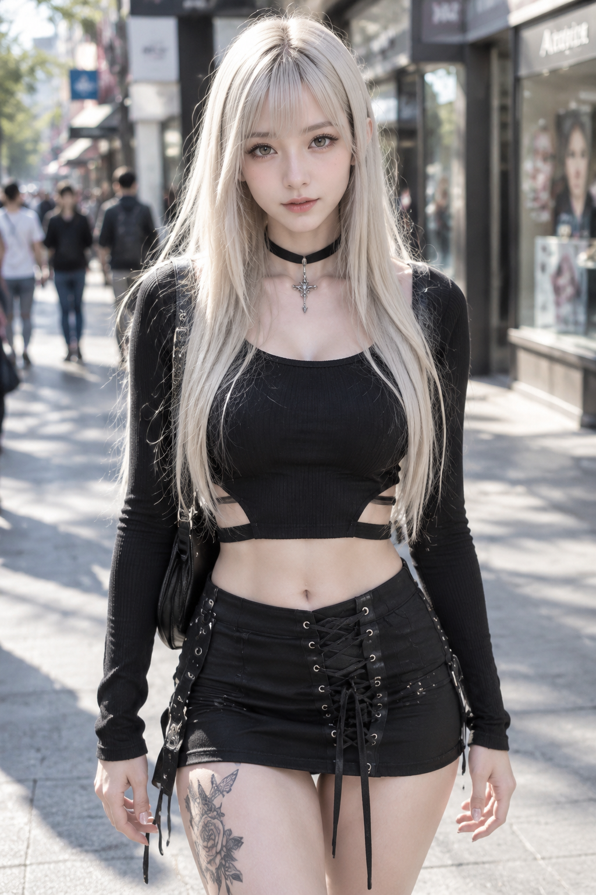
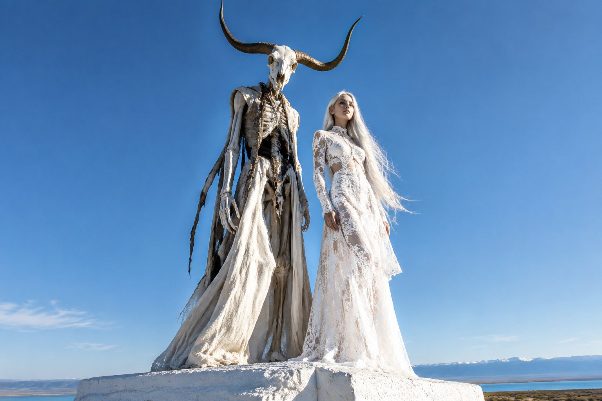
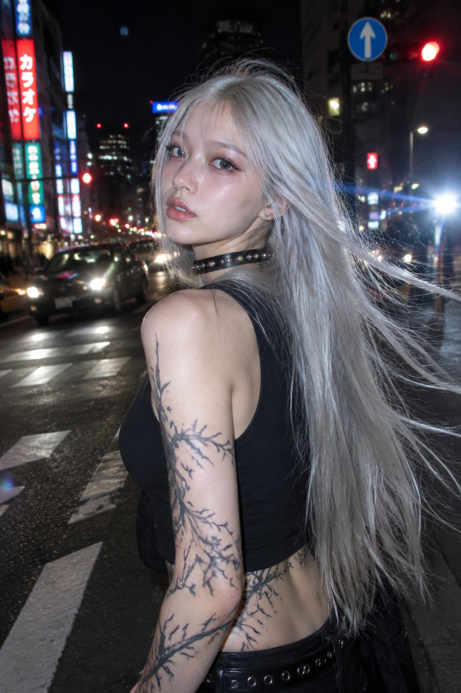
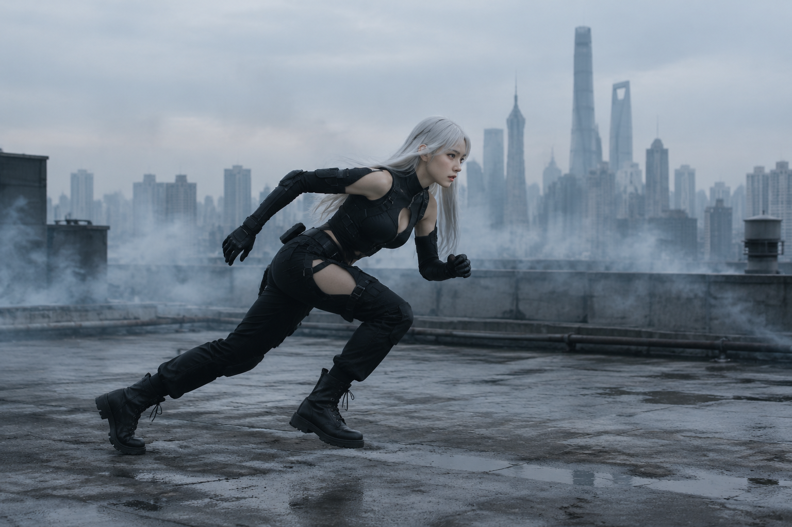

目立つつもりは、あったけど。
目立つつもりは、あったけど。 https://t.co/9gwxtwssJI
Original video
Reverse image
Not generated yet.
Reverse video
Not generated yet.
50 posts · done 7 · failed 2 · refused 3 · pending 38
目立つつもりは、あったけど。 https://t.co/9gwxtwssJI
Not generated yet.
Not generated yet.
無口な服と、待ち合わせ https://t.co/xkIWpUNfrK
Not generated yet.
Not generated yet.
白に灯る、赤い夜。 https://t.co/DgwgPO4O2Z
Not generated yet.
Not generated yet.
黒がやさしくなる瞬間 https://t.co/hVBH8SjlR5
Not generated yet.
Not generated yet.
Angels Tell Lies with Ribbons https://t.co/bwdGRGNlAE
Not generated yet.
Not generated yet.
黒を着ても、甘いまま https://t.co/TDWB19tL4g
Not generated yet.
Not generated yet.
Who fell first? https://t.co/b1QuVQm4Lu
Not generated yet.
Not generated yet.
静けさを、ひるがえす。 https://t.co/wl0IERCghS
Not generated yet.
Not generated yet.
曲線の呼吸。 https://t.co/zkaVqvYTwC
Not generated yet.
Not generated yet.
出発できない理由。 https://t.co/BYyVrMatql
Not generated yet.
Not generated yet.
黒に、甘える。 https://t.co/mkIfMO0JP2
Not generated yet.
Photorealistic vertical close-up portrait in soft dim light, a young woman with black hair in pigtails and bangs, wearing a black lace high-neck outfit with sheer sleeves and a glossy black choker, looking at the camera, blurred warm background lights, dramatic soft lighting, fashion photography.
15-second vertical fashion video: she looks at the camera, turns her head slowly, black pigtail hair sways gently, light moves across the black lace outfit, camera holds a steady close-up, smooth subtle motion, soft dramatic light.
Not generated yet.
街角のミント https://t.co/pNInakEC3H
Not generated yet.
Photorealistic vertical portrait in bright daylight outdoors, a young woman with a platinum-blonde bob with mint-green ends and straight bangs, wearing a black spiked choker with a large ring, a distressed oversized mint-blue knit sweater with anime-style graphics, and a black pleated mini skirt with a wide studded belt, standing facing the camera, blurred street background, fashion photography.
15-second vertical fashion video: she stands facing the camera, shifts her pose slightly and turns her head, mint-tipped hair sways, camera holds a steady portrait, smooth subtle motion, bright daylight.
Not generated yet.
この微笑みは、仕様外。 https://t.co/k3sJiDozYh
Not generated yet.
Photorealistic vertical portrait in bright daylight outdoors, a young woman with long straight brown hair and bangs, wearing a black lace top and an elaborate polished silver mechanical armor harness over one shoulder and arm, looking at the camera, blurred bright street background, sharp metallic detail, fashion photography.
15-second vertical fashion video: she turns slowly toward the camera, long brown hair moves in the breeze, the silver mechanical armor catches the light, camera holds a steady close portrait, smooth subtle motion, bright daylight.
Not generated yet.
黒にひとさじの甘さ https://t.co/8bI7VXlB5d
Not generated yet.
Photorealistic vertical portrait in a bright white interior, a young woman with a black bob and bangs, wearing a black ribbed knit long-sleeve mini dress with cold shoulders, a high neck, a small cross pendant necklace, and a lace-up side slit, standing facing the camera, soft bright light, fashion photography.
15-second vertical fashion video: she stands facing the camera, shifts her pose slightly, black bob hair sways gently, camera holds a steady portrait, smooth subtle motion, bright soft light.
Not generated yet.
白龍を纏う https://t.co/SuLWbr3roV
Not generated yet.
Photorealistic vertical portrait on a plain light background, a young woman with dark brown hair in a low bun with loose face-framing strands, wearing a shimmering white scale-textured dragon-inspired outfit with a high spiked collar, long sleeves, side cut-outs with metallic straps and a matching skirt, standing in profile looking at the camera, soft bright light, intricate scale detail, fashion photography.
15-second vertical fashion video: she stands in profile, turns her head slowly toward the camera, loose hair strands move gently, the scale-textured outfit shimmers, camera holds a steady portrait, smooth subtle motion, bright light.
Not generated yet.
黒に咲く金色 https://t.co/EY6kVAcAhg
Not generated yet.
Photorealistic vertical portrait in bright daylight outdoors, a young woman with shoulder-length silver-blonde hair and bangs, wearing a black cold-shoulder long-sleeve top with gold ornate embroidery and side cut-outs, a black lace-up mini skirt, and black double garter straps on one thigh, standing facing the camera, blurred street background, fashion photography.
15-second vertical fashion video: she stands facing the camera, shifts her pose slightly, turns her head, silver-blonde hair moves in the breeze, gold embroidery catches the light, camera holds a steady portrait, smooth subtle motion, bright daylight.
Not generated yet.
White, with a twist. https://t.co/jdqxOlCu5z
Not generated yet.
Photorealistic vertical portrait on a plain white background, a young woman with long straight black hair, wearing a white sleeveless high-neck dress with intricate lace trim, open back and lace-up side details and a flared layered skirt, standing in profile looking back over her shoulder at the camera, soft bright studio light, fashion photography.
15-second vertical fashion video: she stands in profile, turns her head slowly toward the camera, long black hair moves gently, the lace dress and skirt sway slightly, camera holds a steady portrait, smooth subtle motion, bright studio light.
Not generated yet.
まぶしさには、名前がある https://t.co/iH4eFKqZsS
Not generated yet.
Photorealistic vertical portrait in bright daylight, a young woman with very long straight pale pink hair and bangs, wearing a white long-sleeve mini dress with lace-up side panels and frayed hems, and white lace thigh-high stockings, leaning against a white pillar, looking at the camera, soft blurred outdoor background, fashion photography.
15-second vertical fashion video: she leans against the pillar, shifts her weight and turns slightly toward the camera, long pale pink hair sways, camera holds a steady portrait, smooth subtle motion, bright daylight.
Not generated yet.
やわらかな鎧 https://t.co/wGtSB140uN
Not generated yet.
Photorealistic vertical portrait on a plain white background, a young woman with long straight black hair and bangs, wearing a sleeveless silver chainmail-style high-neck dress with side cut-outs and lacing, one hand on her hip, looking at the camera, soft bright studio light, sharp metallic detail, fashion photography.
15-second vertical fashion video: she shifts her pose slightly, turns her head, long black hair sways gently, the silver chainmail dress catches the light, camera holds a steady close portrait, smooth subtle motion, bright studio light.
Not generated yet.
WHITE ON BLUE https://t.co/gK6o0f4t31
Not generated yet.
Photorealistic vertical full-body fashion portrait against a clear blue sky, a young woman with a short platinum-white bob and straight bangs, wearing a white long-sleeve mini dress with ruffled trim and a small side slit, and shimmering white lace-up thigh-high boots with block heels, leaning back against a white horizontal railing, looking over her shoulder at the camera, bright daylight, crisp clean minimal composition, fashion photography.
15-second vertical fashion video: she leans on the white railing, turns her head slowly toward the camera, her short white hair moves lightly in the breeze, camera holds a steady full-body shot against the blue sky, smooth subtle motion, bright daylight.
Not generated yet.
白にひそむ、反抗。 https://t.co/01NQyw0Hwo
Not generated yet.
Photorealistic vertical studio portrait of a young woman with very long straight platinum-blonde hair and blunt bangs, crouching on a white cube against a pale grey background. She wears a white short-sleeve dress with a collar, black tie, lace-trimmed skirt and open lace-up back, and chunky white lace-up platform boots with metallic block heels. One hand rests near her chin, gaze directed at the camera. Bright soft studio lighting, fashion editorial photography.
She rises gracefully from the crouch to a standing pose, one hand on her hip, her long platinum hair falling straight, then turns slightly with a calm expression. Camera holds a steady full-body shot against the pale background.
Not generated yet.
黒川葵、白昼の微笑み https://t.co/AKLXq2wYaX
Not generated yet.
Photorealistic vertical outdoor street portrait, close chest-up shot, of a young woman with black hair in a high messy topknot with loose face-framing strands and bangs, looking at the camera with a calm expression. She wears a white high-neck long-sleeve crop top with a horizontal chest cut-out. Behind her a sunlit city street with blurred cars, buildings and traffic lights. Bright daylight, shallow depth of field, candid fashion photography.
She turns to face the camera fully and breaks into a bright genuine smile, standing on the sunlit street, her white top and high topknot catching the light, city traffic softly blurred behind her. Camera holds a steady chest-up shot.
Not generated yet.
Soft Rebellion https://t.co/TInINMIvtt
Not generated yet.
Photorealistic vertical indoor portrait of a young woman with very long pale pink-white hair, standing on a white platform beside a metal railing in a bright minimalist white room. She wears an off-shoulder white ribbed crop top, white lace-up denim shorts with long hanging laces, and tall white lace-up platform boots. One leg is raised on the platform, one hand resting on the railing, gaze lowered. Bright clean lighting, fashion editorial photography.
She steps down from the platform and walks slowly toward the camera, her long pale hair swaying, then smiles gently at the camera. Camera holds steady in a full-body shot in the bright white interior, her white platform boots moving gracefully.
Not generated yet.
白の侍女 https://t.co/OwN2gOqZ82
Not generated yet.
Photorealistic vertical outdoor portrait of a young woman with a platinum-blonde bob and blunt bangs, head bowed, eyes lowered, leaning against a white classical column in bright sunlight. She wears a white ruffled maid-style outfit: a puff-sleeve cropped blouse with a bow collar and a short apron skirt with lace trim and side lacing, white socks and black shoes. Crisp shadows, fashion editorial photography.
She steps away from the column and turns gracefully toward the camera, her white ruffled skirt swaying, then smiles softly at the camera. Bright sunlight, camera steady in a full-body shot, the white architecture softly blurred behind her.
Not generated yet.
Lace Mirage https://t.co/krTKAtDzsS
Not generated yet.
Photorealistic vertical studio portrait of a young woman with extremely long platinum-white hair and blunt bangs, standing in three-quarter profile against a seamless white background. She wears a white lace long-sleeve mini dress with open cut-out panels along the sides and skirt, the lace frayed and delicate, her shoulder bare. She glances back over her shoulder at the camera with a soft expression. Bright high-key lighting, fashion editorial photography.
She turns slowly, her very long platinum hair flowing, then arches her neck back with eyes closed, arms crossing gracefully in front of her chest, the white lace dress catching the light. Camera holds a steady medium shot against the white background.
Not generated yet.
黒と水平線 https://t.co/wj60fRvCRf
Not generated yet.
Photorealistic horizontal portrait of a young woman in profile walking along a bright seaside promenade, long straight black hair flowing, wearing a black ribbed long-sleeve crop top, a black pleated mini skirt with a studded belt, and black lace-up boots. Seagulls and a pale sea horizon stretch behind her under a washed-out sky. Bright airy daylight, fashion editorial photography.
She walks gracefully along the seaside promenade in profile, then turns to face the camera, lifting one hand behind her head as her hair blows in the sea breeze, seagulls drifting in the background. Camera tracks smoothly beside her, then holds a front three-quarter shot.
Not generated yet.
POP😈LITURGY https://t.co/1mWSSLBTyj
Not generated yet.
Photorealistic vertical full-body outdoor portrait of a young woman in a dark gothic costume: a long black lace hooded cape dress with a high front slit, large golden cross pendants on her chest, tall curved black horns rising from the hood, long straight dark hair with bangs, and ornate golden platform boots. She stands on a bright sunlit pedestrian crossing, blurred pedestrians in the background, a thin dark tail with a golden tip curling behind her. Harsh daylight, fashion editorial photography.
She walks slowly and gracefully forward across the sunlit crossing toward the camera, her long black lace cape flowing, one hand lightly holding the cape, gaze lowered then lifting to the camera. Pedestrians blur past in the background, camera tracks her steadily in a full-body shot.
Not generated yet.
白蝕 https://t.co/vMlwjiN0Yj
Not generated yet.
Photorealistic vertical full-body studio portrait of a young woman with very long straight black hair and blunt bangs, standing against a seamless white wall in bright sunlight, casting a long soft shadow. She wears an off-shoulder white lace mini dress with long sleeves and a frayed hem, and delicate strappy sandals with small cross charms. One hand is raised near her chin, head slightly bowed, gaze lowered. High-key fashion editorial photography.
She slowly turns her body, her long black hair sweeping dramatically through the air, then turns back toward the camera with a calm expression. Bright sunlight, long shadows on the white wall, camera steady in a full-body shot, the lace dress moving gently.
Not generated yet.
笑い涙何とも言えず最高です✨ プロンプト引用させていただきます😊 https://t.co/ykPdByOXbw https://t.co/CWg4a399dR
Not generated yet.
Photorealistic horizontal close-up portrait of a young woman with a tousled dark bob haircut and wispy bangs, glancing sideways with a pensive expression, freckles visible on her cheeks, against a plain pale background. She wears a black sequin top. Soft diffused daylight, shallow depth of field, candid editorial photography.
Close-up on her face as her sideways glance softens, her eyes close and she breaks into a tearful, joyful laugh, shoulders shaking slightly, then she covers her mouth briefly with her hand. Camera holds steady on her face throughout, natural and candid.
Not generated yet.
純白に棲む刃 https://t.co/W7mjo983e8
Not generated yet.
Photorealistic vertical studio portrait of a young woman with long straight black hair and blunt bangs, eyes closed, head tilted down, against a seamless pure white background. She wears a white cropped long-sleeve lace top with frayed edges and flared sleeves, and a white lace mini skirt with side lace-up detailing. In her right hand she holds an ornate silver longsword with a golden filigree hilt, its blade angled across the lower frame. Bright high-key lighting, soft shadows, fashion editorial photography, crisp lace texture detail.
She slowly lifts her head and opens her eyes, raising the ornate longsword in a smooth diagonal arc across the frame as golden sparks shimmer near her hair. The camera stays steady in a medium shot, her white lace outfit swaying gently, ending with her gazing calmly at the camera, sword held diagonally.
Not generated yet.
街に溶けない午後 https://t.co/7w2usqgPOR
Not generated yet.
Photorealistic vertical shot of a young woman with long dark brown hair and bangs, wearing an oversized dark navy chunky knit sweater, a shiny metallic silver mini skirt and black knee-high socks, carrying a fur-trimmed bag, standing by a pole on a sunny city street with blurred cars and warm afternoon light.
15-second video: she stands by the pole, shifting slightly as warm sunlight moves across the knit sweater and metallic skirt, blurred street traffic behind her, camera holds steady, golden afternoon mood, gentle subtle motion.
Not generated yet.
十字架と微熱 https://t.co/HhSqGUIU5G
Not generated yet.
Photorealistic vertical shot of a young woman with long straight black hair and bangs, wearing an off-shoulder black ribbed long-sleeve top, a silver cross necklace, and a black shiny vinyl mini skirt with a pink crinkled panel and side lacing, against a pale blue studio background, hand on hip, looking at the camera.
15-second video: she shifts her weight, tilts her head and moves her hands to her hips with a slight sway, camera holds a steady medium shot, soft even studio light, subtle confident motion.
Not generated yet.
甘くない白 https://t.co/B3jfPc9OzU
Not generated yet.
Photorealistic vertical full-body shot of a young woman with long black hair and bangs, eyes lowered, wearing an off-shoulder white cable-knit cropped sweater with long distressed sleeves and a small black star on the chest, a black shiny vinyl mini skirt with a studded belt, and black knee boots, against a smooth blue-grey studio background, cool soft light.
15-second video: she slowly lifts her head and turns to a side profile, arms relaxing at her sides, camera holds a steady full-body shot, soft cool studio light, slow graceful turn.
Not generated yet.
毒を纏う、午後。 https://t.co/kI5RpkvdcK
Not generated yet.
Photorealistic vertical shot of a young woman with long straight black hair and bangs, wearing an off-shoulder fuzzy black sweater with a large pink skull and VENOM lettering and a black lace-trim mini skirt, standing on a sunny city street with blurred signs behind her, bright daylight, looking back over her shoulder at the camera.
15-second video: she turns slowly to face the camera, long black hair blowing in the wind, camera holds a steady medium shot, sunny street light and blurred background shifting gently, casual and graceful motion.
Not generated yet.
黒曜の被写体 https://t.co/xmoVlzhr37
Not generated yet.
Photorealistic horizontal medium shot of a young woman with wet-look black hair with white streaks and straight bangs, wearing a glossy black high-neck bodysuit with an abstract ink-like black pattern, standing in a photo studio with large softbox lights visible on both sides, cool blue-grey light, glossy highlights on hair and costume.
15-second video: camera slowly pushes in from a medium studio shot to a close-up of her face as she turns to look at the camera, wet hair shining under the studio lights, cool blue-grey tones, still and glossy motion.
Not generated yet.
光源の向こう側 https://t.co/s7VUXUZ9ix
Not generated yet.
Photorealistic vertical shot of a young woman with long silver hair and bangs, wearing a black shiny vinyl halter corset top with cutouts and long frayed sleeves, black vinyl shorts, silver chains and metal thigh bands, and black boots, standing in front of a large bright LED screen, strong backlight and rim light, high contrast, night city setting.
15-second video: she turns slowly from a side profile to face the camera, hands moving to her hips, long ribbons and silver chains swaying, bright LED glow behind her, camera holds steady, confident slow pose change.
Not generated yet.
コンクリート・リリィ https://t.co/fodJrhwv64
Not generated yet.
Photorealistic vertical shot of a young woman with long straight silver-white hair falling across part of her face, wearing a black fitted long-sleeve top and a black pleated mini skirt, with a white robotic prosthetic right forearm and hand, leaning against a weathered concrete wall in a grey brutalist outdoor setting, overcast daylight, muted tones.
15-second video: she pushes off the concrete wall and walks slowly toward the camera, silver hair blowing in the wind, the white robotic hand clearly visible, camera holds steady then tracks slightly, muted concrete tones, slow deliberate motion.
Not generated yet.
Reason: bytecat gpt-image-2 HTTP 200 but empty image data returned at image step, no retry per MUSE_TASK
白昼の縫合標本 https://t.co/EmRxV1sHEr
Not generated yet.
Photorealistic horizontal shot of a young woman with a silver bob haircut and straight bangs, wearing a black lace-up halter bodysuit with stitched lacing detail and black platform ankle boots, sitting on a stool leaning against a raw concrete wall beside a huge window overlooking a hazy city skyline in bright daylight, knees drawn up, looking at the camera.
15-second video: camera slowly pushes in from the wide seated pose beside the window to an extreme close-up of her face, eyes closing softly, bright daylight and hazy city light behind her, calm and still motion.
Not generated yet.
Reason: bytecat gpt-image-2 HTTP 200 but empty image data returned at image step, no retry per MUSE_TASK
Silhouette by the Window https://t.co/Sd5QQ5U6P5
Not generated yet.
Photorealistic horizontal full-body shot of a young woman with very long straight blonde hair, wearing a pale pink ribbed long-sleeve top, a short white lace ruffled mini skirt and white knee-high socks, standing in front of a large bright window in a derelict white room with peeling paint, backlit by hazy daylight, muted soft tones, still and quiet.
15-second video: she stands before the large window, then slowly turns her head to the side, camera slowly pulls back to reveal more of the worn room and radiator, soft daylight through the dusty window, calm and still motion.
Not generated yet.
Reason: bytecat gpt-image-2 HTTP 400 content_policy_violation at image step, no retry per MUSE_TASK
Monochrome Pulse https://t.co/Scz7OGw1tU
Not generated yet.
Photorealistic vertical full-body portrait of a young woman with very long silver-white hair with straight bangs worn in a low ponytail, wearing a black sheer ribbed turtleneck bodysuit dotted with small rhinestones, a black studded belt with hanging silver chains and small cross pendants, and black mesh knee-high socks, standing in a three-quarter pose looking at the camera against a bright white studio background, soft high-key light, clean and sharp.
15-second video: she slowly turns from a three-quarter pose to a side pose and then faces the camera, arms opening slightly, long silver hair swaying gently, camera holds a steady full-body shot, bright soft white studio light, slow and graceful motion.
Not generated yet.
Reason: bytecat gpt-image-2 HTTP 400 content_policy_violation at image step, no retry per MUSE_TASK
Quiet Armor https://t.co/JHCqGn8Aiz
Not generated yet.
Photorealistic vertical portrait outdoors in a grassy field under a clear blue sky, a young woman with long straight black hair and bangs, wearing a sheer nude-toned long-sleeve bodysuit covered all over with small silver spikes and studs, standing in profile with one arm extended, bright sunlight, fashion editorial, sharp detail.
15-second outdoor video: she turns slowly in place, arms extending outward, hair blowing in the wind, camera circles gently from front to back view, blue sky and golden grass behind her, smooth slow rotation.
Not generated yet.
零時のスパンコール https://t.co/dbMOdxbA8D

Photorealistic vertical portrait at night on a city street, a young woman with a short grey bob and bangs, wearing a strapless black sequin mini dress that sparkles under street lights, standing beside a utility pole, blurred party crowd and neon lights behind her, direct flash photography, looking over her shoulder at the camera.
15-second night street video: she turns from a side pose to face the camera, walks forward, poses with a hand on her hip and smiles, sequins sparkling as she moves, camera follows in a medium shot, lively night background blurred.
Not generated yet.
Reason: image reused (bytecat gpt-image-2, batch 1) and video (Muse, 10s) generated
A Doll-Like Afternoon https://t.co/9hUvBHvvVC
Photorealistic vertical portrait on a sunny city sidewalk, a doll-like young woman with long platinum blonde hair, wearing an oversized black distressed knit hoodie dress with colourful cartoon patches on the sleeves, light pink shorts underneath, and cream lace knee-high socks, green bushes and city buildings behind her, bright daylight, cute street fashion photography.
15-second sidewalk video: she stands facing the camera, turns to her side, walks a few steps, then turns back to face the camera, hoodie and hair moving gently, camera stays at medium distance, sunny and casual.
Reason: image reused (bytecat gpt-image-2, batch 1) and video (Muse, 10s) generated
Sunny Mood https://t.co/8XseUg6H6u

Photorealistic vertical portrait on a sunny city street, a young woman with very long straight silver-blonde hair and bangs, wearing a black long-sleeve crop top with waist cut-outs, a black lace-up mini skirt, and a black choker with a pendant, a tattoo on her thigh, soft sunlight, blurred pedestrians and shopfronts behind her, candid street fashion photography, looking at the camera.
15-second sunny street video: she walks slowly toward the camera, turns her head, touches her hair, smiles softly, hair and skirt moving naturally, camera follows in a medium shot, bright daylight, relaxed and cheerful.
Reason: bytecat gpt-image-2 HTTP 400 content_policy_violation at image step, no retry per MUSE_TASK
Silent Arsenal https://t.co/2QVdUTSc2S
Not generated yet.
Photorealistic vertical portrait on a sunny city street, a young woman with very long pale pink hair and straight bangs, wearing a black bikini-style top and bottoms under a detailed silver mechanical exoskeleton with spiked metal arms, torso frame and leg pieces, holding a large black rifle vertically, sitting pose, blurred street and pedestrians behind her, bright daylight, futuristic fashion editorial.
15-second street video: she stands up while holding the rifle, shifts it across her body, then raises it toward the camera in an aiming pose, mechanical armor catching light, camera moves from medium shot to close-up, steady smooth motion, urban background blurred.
Not generated yet.
Reason: image reused (bytecat gpt-image-2, batch 1) and video (Muse, 10s) generated
白骸のエデン https://t.co/ximoGBWGVj

Photorealistic wide shot under a clear blue sky, a tall skeletal figure with long horns standing beside a young woman with very long silver hair wearing a white lace outfit, both standing on a pale structure in an open landscape, low-angle wide framing, bright daylight, surreal fashion editorial, sharp detail.
15-second video: camera slowly pushes in from the wide shot of the skeletal figure and the woman to a close-up of the woman beside the skeleton, she looks down and adjusts her outfit, wind moves her long silver hair, clear blue sky, slow steady camera movement, no cuts.
Reason: image reused (bytecat gpt-image-2, batch 1) and video (Muse, 10s) generated
Rose Anarchy https://t.co/Qzly7STgmz
Photorealistic vertical full-body portrait on a grand palace staircase, a young woman with very long straight pale pink hair, wearing a black long-sleeve crop top with a red graphic panel, a black studded belt with chains, a short black skirt, and black thigh-high boots with chains, ornate gold railings, a green floral carpet, chandeliers and red walls behind her, warm bright light, fashion photography.
15-second palace staircase video: she poses on the stairs, turns to face the camera, walks a few steps, smiles, and forms a heart shape with her hands, pink hair swaying, camera moves gently around her, chandeliers and gold staircase in background, playful and bright.
Reason: image (bytecat gpt-image-2) and video (Muse, 10s) generated
玻璃の角冠 https://t.co/E1egTTm3g3
Photorealistic vertical close-up portrait of a doll-like young woman with very long pastel hair in pink, mint and pale blue with straight bangs, wearing an ornate high-neck costume embroidered with jewels, pearls and gold, and a large decorative glass horn headpiece with a small white animal figure, eyes closed, one hand delicately near her face, soft bright daylight, shallow depth of field, intricate detail.
15-second close-up video: she slowly opens her large blue eyes, lowers her hand, tilts her head slightly, soft light moves across the jeweled costume and glass headpiece, camera holds a steady close-up, gentle subtle motion, dreamlike and still.
Reason: image reused (bytecat gpt-image-2, batch 1) and video (Muse, 10s) generated
白銀ノイズ https://t.co/qDck8rsRXY

Photorealistic vertical portrait at night on a Tokyo city street, a young woman with very long straight silver hair blown by wind, wearing a black sleeveless crop top, a black studded choker, and dark bottoms, intricate dark vine-like tattoos on her arm and waist, harsh camera flash lighting, lens flare, blurred neon signs, traffic lights and buildings behind her, she looks over her shoulder at the camera, candid street fashion photography.
15-second night street video: the same woman turns slowly, runs a hand through her wind-blown silver hair, shifts her pose and gaze toward the camera, flash lighting flickers, neon city background stays blurred, camera stays close and handheld, smooth natural movement.
Reason: image reused (bytecat gpt-image-2, batch 1) and video (Muse, 10s) generated
白銀の残像 https://t.co/nO2sxFy0xe

Photorealistic wide shot on a flat concrete rooftop in a hazy city, a young woman with long straight silver-white hair in a black futuristic tactical outfit with cut-out panels and black boots running low across the rooftop from left to right, low crouched sprint pose, thin smoke drifting, distant grey skyscrapers under a pale overcast sky, muted cool tones, cinematic wide framing, sharp detail, realistic skin and fabric texture.
A 15-second realistic video, same woman and rooftop: she sprints low across the rooftop, then slows to a stand as smoke curls around her feet, a small glow flashes on the ground, camera steadily pushes in from wide to a close-up of her face looking at the camera, hazy city skyline behind, smooth continuous motion, no cuts, muted cool daylight.